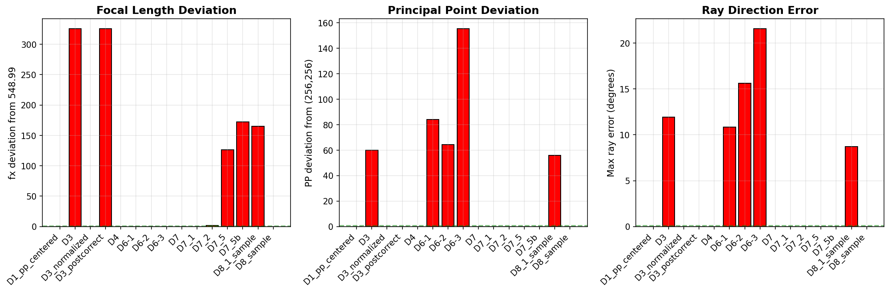
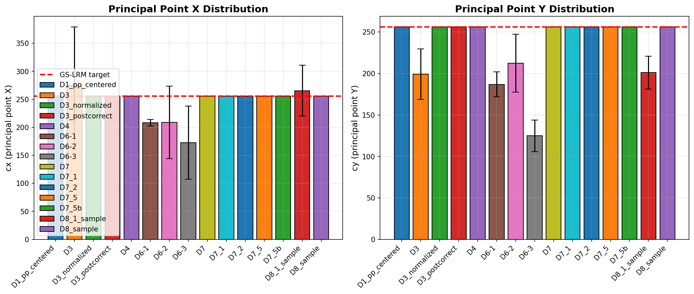

Generated: 2026-01-21 20:53 | Datasets: 15
GS-LRM pretrained model expects:
| Dataset | fx (mean±std) | fy (mean±std) | cx (mean±std) | cy (mean±std) | Distance | fx Dev. | PP Dev. | Ray Err. | Skew | Geom. |
|---|---|---|---|---|---|---|---|---|---|---|
| D1_pp_centered | 549.00±0.00 | 549.00±0.00 | 256.0±0.0 | 256.0±0.0 | 2.70 | 0.01 | 0.0 | 0.00° | × | ✓ |
| D3 | 874.83±14.82 | 880.34±11.32 | 275.0±104.1 | 199.0±30.5 | 331.37 | 325.84 | 60.1 | 11.92° | × | ✓ |
| D3_normalized | 549.00±0.00 | 552.45±7.10 | 256.0±0.0 | 256.0±0.0 | 2.70 | 0.01 | 0.0 | 0.00° | × | ✓ |
| D3_postcorrect | 874.83±14.82 | 880.34±11.32 | 256.0±0.0 | 256.0±0.0 | 331.37 | 325.84 | 0.0 | 0.00° | × | ✓ |
| D4 | 549.00±0.00 | 552.45±7.10 | 256.0±0.0 | 256.0±0.0 | 2.70 | 0.01 | 0.0 | 0.00° | × | ✗ |
| D6-1 | 549.00±9.30 | 552.45±7.10 | 208.3±6.1 | 186.8±15.0 | 2.70 | 0.01 | 84.1 | 10.83° | × | ✓ |
| D6-2 | 549.00±9.30 | 552.45±7.10 | 208.8±64.8 | 212.3±34.8 | 2.70 | 0.01 | 64.3 | 15.62° | × | ✓ |
| D6-3 | 549.00±9.30 | 552.45±7.10 | 172.6±65.3 | 124.9±19.1 | 2.70 | 0.01 | 155.4 | 21.59° | × | ✓ |
| D7 | 549.00±0.00 | 549.00±0.00 | 256.0±0.0 | 256.0±0.0 | 2.70 | 0.01 | 0.0 | 0.00° | × | ✓ |
| D7_1 | 549.00±0.00 | 549.00±0.00 | 256.0±0.0 | 256.0±0.0 | 2.70 | 0.01 | 0.0 | 0.00° | × | ✓ |
| D7_2 | 547.27±1.18 | 550.75±1.20 | 256.0±0.0 | 256.0±0.0 | 2.70 | 1.72 | 0.0 | 0.00° | × | ✓ |
| D7_5 | 675.50±24.14 | 679.73±22.67 | 256.0±0.0 | 256.0±0.0 | 2.70 | 126.51 | 0.0 | 0.00° | × | ✓ |
| D7_5b | 721.13±36.02 | 725.65±35.08 | 256.0±0.0 | 256.0±0.0 | 2.70 | 172.13 | 0.0 | 0.00° | × | ✓ |
| D8_1_sample | 713.69±0.00 | 713.69±0.00 | 265.4±45.3 | 201.1±19.8 | 2.70 | 164.70 | 55.7 | 8.71° | ✓ | ✓ |
| D8_sample | 548.99±0.00 | 548.99±0.00 | 256.0±0.0 | 256.0±0.0 | 2.70 | 0.00 | 0.0 | 0.00° | ✓ | ✓ |


For pixel (u, v), the ray direction in camera coordinates:
\[ \mathbf{d}_c = \begin{bmatrix} (u - c_x) / f_x \\ (v - c_y) / f_y \\ 1 \end{bmatrix} \]Critical: If \(c_x, c_y\) are wrong, the ray direction is wrong.
At pixel (256, 256) center, the ray angle error when PP deviates from (256, 256):
\[ \theta_{\text{error}} = \arctan\left(\sqrt{\left(\frac{256 - c_x}{f_x}\right)^2 + \left(\frac{256 - c_y}{f_y}\right)^2}\right) \]D8 uses homography instead of affine to correct skew:
\[ H = K_{\text{target}} \cdot K_{\text{orig}}^{-1} \]Where:
\[ K_{\text{target}} = \begin{bmatrix} 548.99 & 0 & 256 \\ 0 & 548.99 & 256 \\ 0 & 0 & 1 \end{bmatrix} \]| Aspect | D7.1 (Affine) | D8 (Homography) |
|---|---|---|
| fx Precision | 549.0 | 548.9937744140625 |
| Skew Handling | Ignored (up to 0.9px error) | Corrected (0px error) |
| Ray Error | ~0° | ~1e-6° (numerical precision) |
| Interpolation | LINEAR | LANCZOS4 |
| Camera | Original Skew (px) | D7.1 Edge Error (px) | D8 Error |
|---|---|---|---|
| Cam 0 | -5.82 | 0.91 | ~0 |
| Cam 1 | +1.39 | 0.23 | ~0 |
| Cam 2 | -0.91 | 0.14 | ~0 |
| Cam 3 | -5.89 | 0.94 | ~0 |
| Cam 4 | -1.27 | 0.20 | ~0 |
| Cam 5 | -4.93 | 0.77 | ~0 |
| Dataset | Mouse Pixels | Area Ratio | BBox Size | Linear Ratio | Error Amp. |
|---|---|---|---|---|---|
| D8_sample | 6,681 | 2.5% | 140×161 | 29.3% | 3.4× |
| D8_1_sample | 11,359 | 4.3% | 183×210 | 38.3% | 2.6× |
| D7_1 | 6,659 | 2.5% | 140×161 | 29.3% | 3.4× |
When mouse occupies ~30% of image linearly:
D8.1 applies 1.3× zoom via crop+resize:
Conclusion: D8.1 is correct. Model will adapt during finetuning. Use D8 if strict fx=549 is needed.
| Use Case | Recommended | Reason |
|---|---|---|
| Standard training | D8 | Exact GS-LRM params, skew corrected |
| Larger mouse needed | D8.1 | 1.3× zoom, fx=713.69 |
| Legacy comparison | D7.1 | Compatible with previous experiments |
# D8 (Recommended)
python -m mouse_extensions.preprocessing.preprocess \
--preset D8 --input-dir /path/to/raw --output-dir /path/to/D8
# D8.1 (With 1.3x zoom)
python -m mouse_extensions.preprocessing.preprocess \
--preset D8.1 --input-dir /path/to/raw --output-dir /path/to/D8.1
Generated by report_generator.py | FaceLift Mouse Extension | {timestamp}